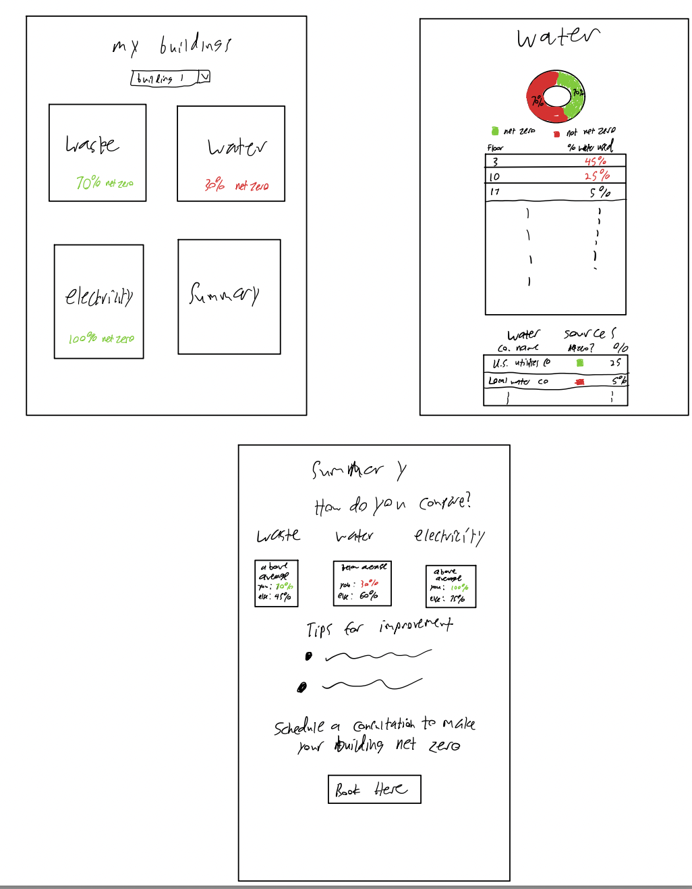
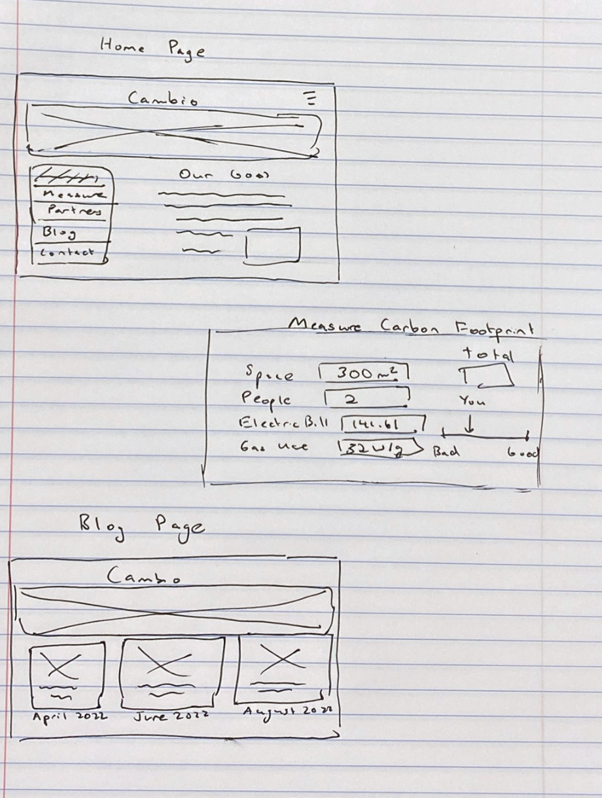
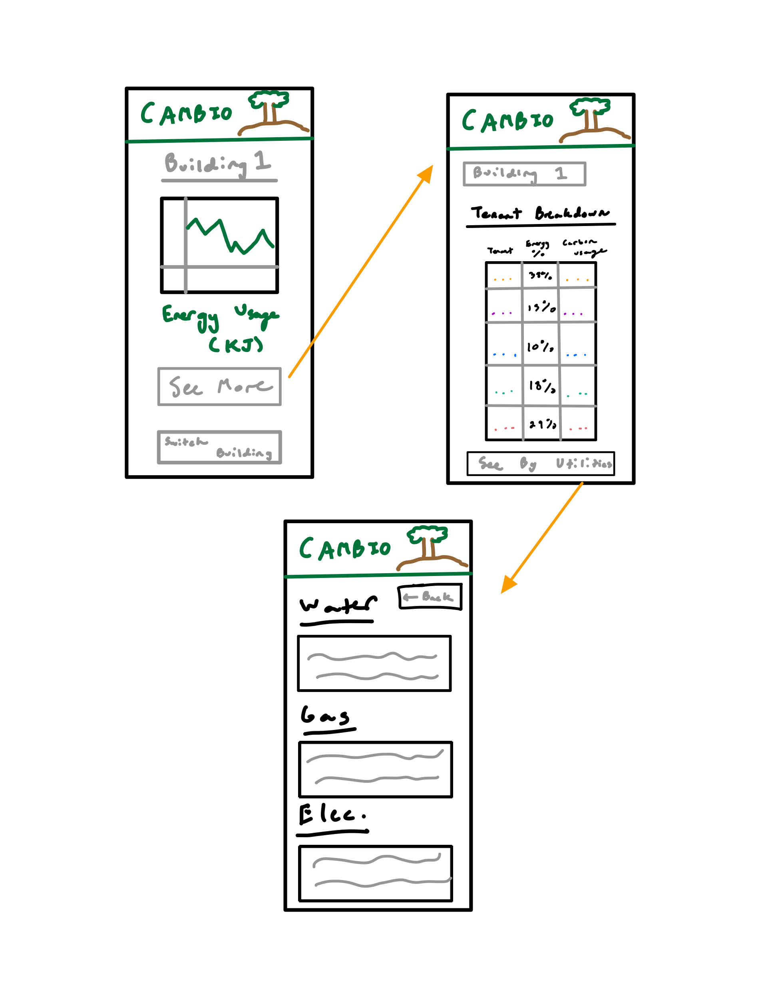
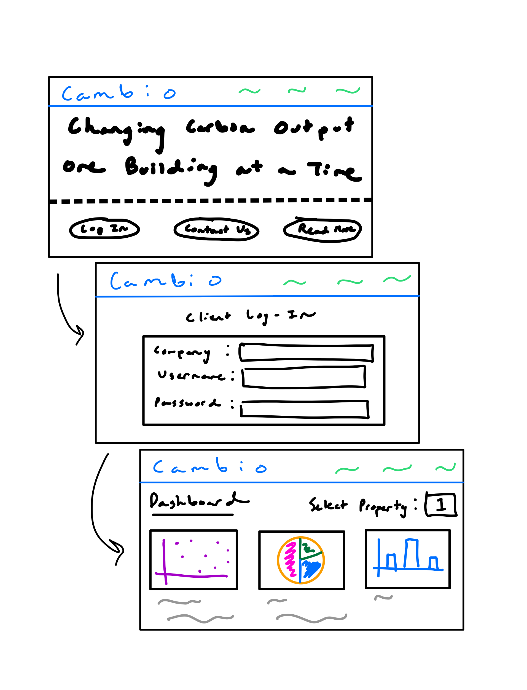
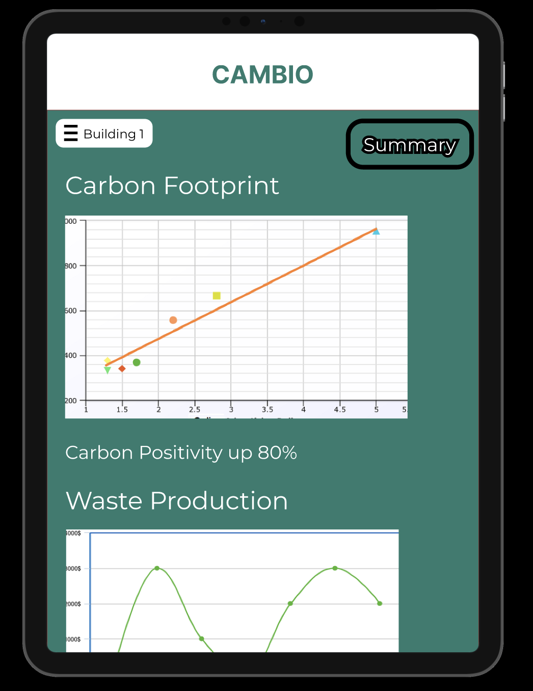
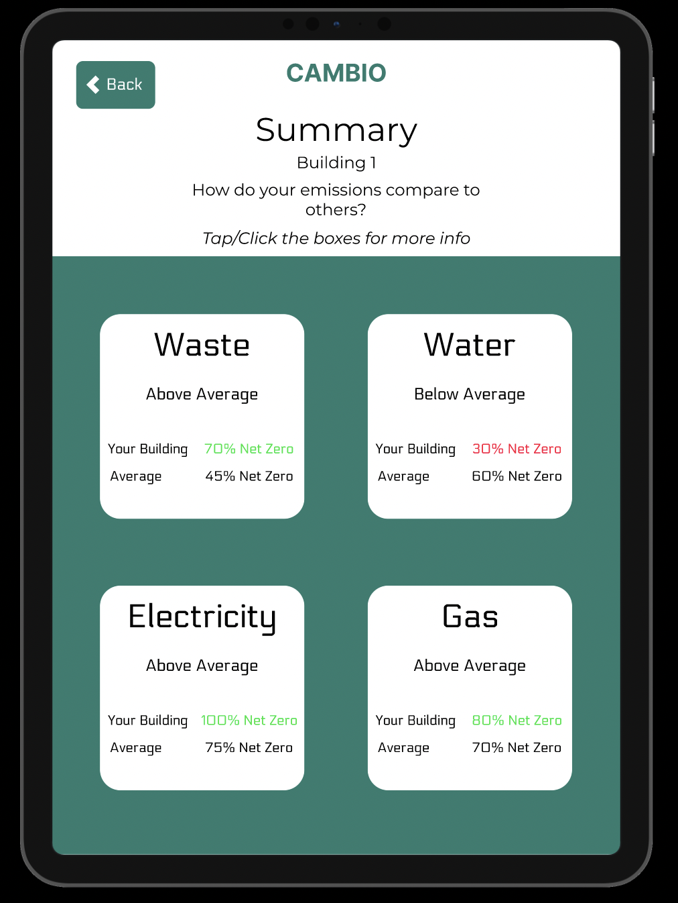
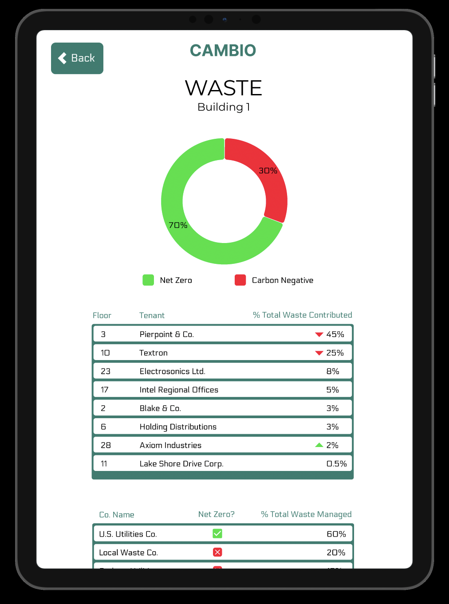

Sketches
The first stage of the project was to do sketches. We all brainstormed basic ideas of how
we each would implement the interface and drew up basic sketches of how we thought the interface should look like.




Design Decisions:
We decided as a group that there still needed to be some more interactive visuals that told users more about the data in comparison to others.
We felt that for each subcategory we needed an associate graph or table to show data in relations to others. We also wanted to make navigating through this site easier
if there were many buildings being used. A final idea that we had was a good Summary page, since often times the managers wouldn't need too in depth data unless there was a problem
but rather a 'Summary' page to inform them that everything is normal. For these reasonse we had small blocks representing any data on usage of differnet utilities and
made sure that there were options for mulitple buildings. We also added a tips page as this could be a customizable set of tips that Cambio can provide based on the
building data.
HI-FI Prototype
Next, we used Figma to come up with an interactive prototype that could accept user input
such as touch. We created 6 pages for our app that were linked together and represented our version of what
we believed the app should look like.



Interactive Figma Page
After we made our first version of the prototype, we conducted a test to obtain user feedback and improve the design.
We presented our design to our classmates and they interacted with the prototype for a few minutes. Down below is a list of the
suggestions that were made:
- Be clear about color distinctions (ex. red if some tenants are using substantially higher usage compared to other tenants)
- The summary page is pushed towards the bottom but data from the summary page could be put into graphs or charts on the home page
- Switch up the fonts (currently only one font throughout)
- “Book Here”/“Consultation” should be on the home page or more showcased than at the bottom of the summary page
- Perhaps the summary page should even be the main page
- Group all of the data related to different components to show the cost vs emissions data in one spot
- On iPhone/tablet - size wise boxes are too small (specifically on the summary page)
- Introduce different information between the summary and home pages
- Cost Analysis button could be a different shape to distinguish it from others
Analysis
For our tasks we tried to guide the users intuitively through the app.
We first had them find more info, then from that info, access specific
info (gas emissions), from there, we asked them to answer a question about
that given data. For the most part, we were happy with our results!
Things were easy to read and information was clear for the users, and
despite varying speeds, everyone was able to successfully complete our tasks.
User 1
- Our first user was super speedy
- She had a little trouble clicking the buttons but it seemed like it was more of a hardware issue.
- She said things were easy to read and had little issue
- She did seem to get hung up on our red and green arrows next to the percentages for tenants, but that did not hurt her task performance
User 2
- User 2 took about twice as much time as the first user, but was only ~2 minutes behind user 3
- Navigation was largely intuitive until the last prompt, in which he struggled to find the tenants
- Things did not seem clearly labeled to him, and our consistent use of the same shades of red and green confused him into thinking that all numbers were related which was not true. This ended up adding a few minutes to the task
- He also was looking for some more visual information than we had provided in the form of graphs
- He recommended changing some color scheme choices so as to not imply improper relations between data
User 3
- Despite some technical difficulties, user 3 was able to move through the tasks much more quickly than user 2, and more in line with user 1.
- Was hoping for more tenant subdivisions of emissions use over time and time frames in general.
- Wanted actual measurements alongside percentage
Conclusion
Overall, the users were able to complete our tasks as expected, with none of them outright failing. They seemed to think that our design was
readable and intuitive for the most part, but could have done with some more visual information/structure. Moving forward, we would add some more graphs and
we would provide the users with more dynamic data access so that they could find exactly what they were looking for in their own way.
This project was useful in developing the skills necessary to take an idea from conception to prototype. Often UI/UX designers have to
take only an idea and turn in into a real product. The specifics of what the interface should look like is often
left open-ended and the designer has to put themselves into the user's place to understand what they would want
from the product if they were using it. It was great to get feedback on the original design and see how our team
might have overlooked some flaws and ideas on how to improve it. It was also cool to use an external service to
get user testing data and see actual users interact with our prototype.